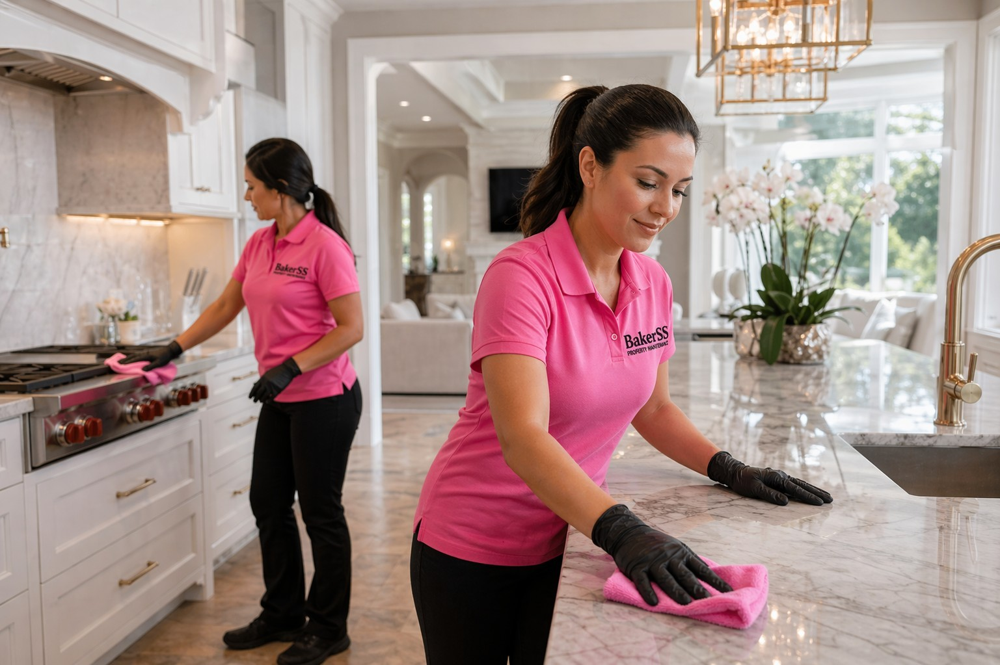

Interior Cleaning in Myrtle Beach, Murrells Inlet & Horry County, SC
Professional deep cleaning, move-out cleaning, and recurring residential cleaning for Myrtle Beach homes, vacation rentals, and investment properties. Starting at $100. Reliable, thorough, coastal-property experienced.

Silo: Interior & Specialized
Interior Cleaning for Coastal Horry County Properties
Coastal living is beautiful — but it's also sandy, humid, and hard on interior spaces. Myrtle Beach homes, vacation rentals, and investment properties accumulate sand, salt residue, humidity-driven mildew, and heavy use from both permanent residents and short-term guests. Keeping interiors genuinely clean requires a professional team that understands the demands of coastal properties.
Bakerss interior cleaning services cover everything from recurring weekly and bi-weekly residential cleaning to thorough deep cleaning, landlord move-out preparation, and pre-sale staging cleans. One vendor, one team, your property always ready.
What Our Interior Cleaning Service Includes
- ✓ Full kitchen cleaning including appliances, counters, and cabinet exteriors
- ✓ Bathroom deep cleaning including grout, tiles, fixtures, and mirrors
- ✓ Bedroom vacuuming, dusting, and surface cleaning
- ✓ Living area dusting, vacuuming, and floor cleaning
- ✓ Floor mopping (tile, hardwood, and laminate)
- ✓ Window sill and blind cleaning
- ✓ Baseboard and trim cleaning
- ✓ Interior door and handle sanitizing
- ✓ Trash removal and liner replacement
- ✓ Optional add-ons: inside oven, inside fridge, interior windows
Coastal Considerations in Horry County
- ✓ Sand infiltration — beach proximity means interiors accumulate sand rapidly; our cleaning addresses all sand entry points
- ✓ Humidity and mildew — coastal humidity promotes mildew in bathrooms and coastal-facing rooms requiring targeted cleaning
- ✓ Salt residue on windows — salt air deposits on interior window surfaces near the coast
- ✓ High-turnover wear — vacation rental interiors experience accelerated wear requiring thorough cleaning between guests
Combine Interior Cleaning With These Interior & Cleaning
Keep your property completely maintained with these complementary services — all from one vendor:
🏖️ Airbnb Cleaning
Upgrade to our vacation rental turnover service for cleaning synced to your booking calendar.
View Airbnb Cleaning →🎨 Painting
Combine interior cleaning with fresh paint for a full property refresh — ideal for landlord turnovers.
View Painting →✨ Epoxy Flooring
New epoxy floor coating plus thorough interior cleaning — total interior transformation.
View Epoxy Flooring →Interior Cleaning by Location
Interior Cleaning Across Horry County — By City
Interior Cleaning in Myrtle Beach, SC
Myrtle Beach's active vacation rental and residential market demands reliable interior cleaning. We serve homeowners, landlords, and rental property owners with thorough cleaning starting at $100.
Myrtle Beach Services →Interior Cleaning in Murrells Inlet, SC
Murrells Inlet residential and vacation properties benefit from interior cleaning that addresses the elevated humidity and organic dust common in this waterfront community.
Murrells Inlet Services →Interior Cleaning in Surfside Beach, SC
Surfside Beach homes and rental properties need regular interior cleaning to manage the constant sand infiltration and humidity typical of this busy Family Beach destination.
Surfside Beach Services →Interior Cleaning in Garden City, SC
Garden City properties — many occupied seasonally — benefit from thorough opening and closing cleans plus recurring service during active rental and occupancy periods.
Garden City Services →Interior Cleaning in Horry County, SC
We serve all of Horry County for interior cleaning — from beachfront vacation rentals to inland primary residences. One team, one call, your property clean and ready.
Horry County Services →Common Questions
Interior Cleaning FAQ — Myrtle Beach & Horry County
Get Interior Cleaning in Myrtle Beach Starting at $100
Serving Myrtle Beach, Murrells Inlet, Surfside Beach, Garden City, and all of Horry County. Veteran owned. Licensed & insured. One call for all your interior maintenance.